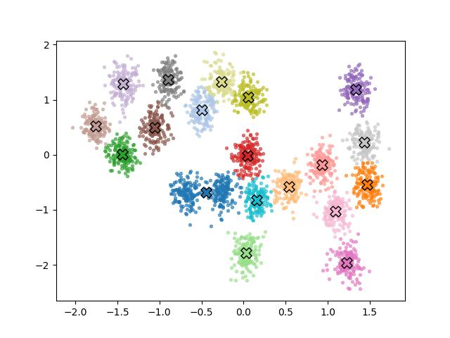

Kümeleme yapmak için klasik yaklaşımlar var, mesela K-Means, ya da Beklenti-Maksimizasyon (EM) yöntemi ile Gaussian Karışım Modelleri. Bu yazıda farklı olarak K-Means yerine GMM, ve GMM hesaplaması için Gibbs örneklemesi kullanacağız.
GMM neden K-Means’e tercih edilir? K-Means, sezgisel açıdan çekici bir algoritma: her noktayı en yakın merkeze ata, merkezleri güncelle, tekrarla. Ancak bu yöntem hiçbir olasılıksal modele dayanmaz. Her kümenin eşit büyüklükte ve küresel olduğunu örtük olarak varsayar, çünkü yalnızca Oklid mesafesini optimize eder. Bunun ötesinde, K-Means size yalnızca nokta tahminleri verir: her küme için tek bir merkez, her nokta için tek bir atama. Belirsizliği ölçmenin hiçbir yolu yoktür. İki kümenin sınırındaki bir noktanın %60 küme 1’e, %40 küme 2’ye ait olduğunu söyleyemezsiniz — K-Means onu birbirine zıt iki seçenekten birine zorla atar. Gauss Karışım Modeli ise tam olarak bir olasılıksal modelden başlar: her noktanın gözlemlenebilir bir kümeden değil, gizli bir değişken tarafından belirlenen bir bileşenden geldiğini açıkça ifade eder. Bu sayede küme şekilleri esnek olabilir, her atama bir olasılık taşır ve belirsizlik modelin doğal bir parçası haline gelir.
Gibbs örneklemesi neden Beklenti-Maksimizasyona (EM) tercih edilir? EM, GMM’yi veriye uydurmak (fıtting) için klasik yaklaşımdır ve oldukca verimlidir: her döngüde gizli değişkenler üzerindeki dağılımı hesaplar (E adımı), ardından bu dağılım altında log-olurluğu (log-likelihood) maksimize edecek parametreleri günceller (M adımı). Ancak EM nihayetinde bir maksimizasyon algoritmasidir — log-olurluğun bir yerel maksimumuna yakınsar ve size tek bir nokta tahmini verir: \(\hat{\mu}_k\), \(\hat{\sigma}_k^2\), \(\hat{\pi}\). Parametreler üzerindeki belirsizlik hakkında hiçbir şey söylemez. Eğer veri azsa ya da kümeler birbirine yakınsa, EM’in bulduğu çözüme ne kadar güvenilmesi gerektiğini bilmek imkânsizdir. Gibbs örneklemesi ise tam Bayeşçi çıkarım yapar: parametrelerin tek bir tahmini yerine tüm sonsal dağılımını örnekler. Bu sayede her parametre için güven aralıkları elde edersiniz, küme sayısı veya karışım oranları üzerindeki belirsizliği ifade edebilirsiniz ve verinin gerçekten birden fazla makul yorumu varsa bu durum örneklerde kendiliğinden ortaya çıkar. Hesaplama maliyeti daha yüksektir, ancak ödül, modelin bildiğini ve bilmediğini dürüstçe yansıtan bir sonsal dağılımdır.
Problemi net olarak tanımlayalım. \(N\) veri noktamız var: \(X = \{x_1, x_2, \ldots, x_N\}\), her \(x_i \in \mathbb{R}^D\). Bu verinin \(K\) Gauss kümesi tarafından üretildiğine inanıyoruz; ancak hangi noktanın hangi kümeye ait olduğunu, ya da küme parametrelerini bilmiyoruz. Amacımız tüm bunları veriden çıkarmak.
Verinin nasıl üretilmiş olabileceğini düşünmek yardımcı olur:
\(\pi = (\pi_1, \ldots, \pi_K)\) şeklinde karışım oranları seçin; burada \(\pi_k \geq 0\) ve \(\sum_k \pi_k = 1\). \(\pi_k\)’yı “rastgele bir noktanın \(k\) kümesine ait olma olasılığı” olarak düşünün.
Her \(i = 1, \ldots, N\) veri noktası için:
Bir küme ataması örnekleyin: \(z_i \sim \text{Categorical}(\pi_1, \ldots, \pi_K)\), yani \(P(z_i = k) = \pi_k\)
Veri noktasını o kümenin Gauss dağılımından örnekleyin: \(x_i \mid z_i = k \sim \mathcal{N}(\mu_k, \sigma_k^2)\)
Basitlik için burada tek sayısal (1D) Gauss’lar kullanıyoruz; dolayısıyla \(\mu_k \in \mathbb{R}\) ve \(\sigma_k^2 \in \mathbb{R}^+\).
\(z_i\)’lere gizli değişkenler denir — modelde var olurlar ama hiçbir zaman gözlemlenemezler. Biz yalnızca \(X\)’i görürüz.
Ne İstiyoruz
Verilen veri için tüm bilinmeyenler üzerindeki sonsal dağılımı istiyoruz:
\[p(\mu, \sigma^2, \pi, Z \mid X)\]
burada \(Z = \{z_1, \ldots, z_N\}\), \(\mu = \{\mu_1, \ldots, \mu_K\}\), \(\sigma^2 = \{\sigma_1^2, \ldots, \sigma_K^2\}\).
Bayes teoremi ile:
\[p(\mu, \sigma^2, \pi, Z \mid X) = \frac{p(X \mid Z, \mu, \sigma^2)\, p(Z \mid \pi)\, p(\pi)\, p(\mu)\, p(\sigma^2)}{p(X)}\]
Paydaki \(p(X)\)’i hesaplamak son derece güçtür (tüm olası \(Z, \mu, \sigma^2, \pi\) üzerinden integral almayı gerektirir). İşte bu yüzden Gibbs örneklemesine başvuruyoruz — bu yöntem, sonsal dağılımdan doğrudan hesaplamadan örneklememize olanak tanır.
Gibbs Örneklemesinin Arkasındaki Fikir
Gibbs örneklemesi basit bir gözleme dayanır: karmaşık bir ortak dağılım \(p(A, B, C)\)’den doğrudan örnekleyemeseniz bile, çoğunlukla koşullu dağılımlardan \(p(A \mid B, C)\), \(p(B \mid A, C)\), \(p(C \mid A, B)\) sırayla örnekleyebilirsiniz. Bu döngüyü yeterince uzun sürdürürseniz, örnekler ilgilendiğimiz ortak dağılıma yakınsar.
Dolayısıyla her bilinmeyen için birer tane olmak üzere dört koşullu dağılım türetmemiz gerekiyor:
\[p(Z \mid X, \mu, \sigma^2, \pi),\quad p(\pi \mid Z),\quad p(\mu_k \mid X, Z, \sigma_k^2),\quad p(\sigma_k^2 \mid X, Z, \mu_k)\]
Önsel Dağılımların Seçimi
Koşulluları işlenebilir kılmak için eşlenik önsel dağılımlar seçiyoruz — olurlukla çarpıldığında aynı aileden bir sonsal veren önseller. Bu, koşulluların kapalı formda elde edilmesini sağlayan matematiksel bir kolaylıktır.
\(\pi\) için — karışım oranları bir simpleks üzerinde yaşar (negatif değildir ve toplamları 1’dir), bu yüzden doğal bir önsel Dirichlet’tir:
\[\pi \sim \text{Dirichlet}(\alpha_1, \ldots, \alpha_K)\]
Simetrik bir önsel kullanacağız: tüm \(k\) için \(\alpha_k = \alpha\). \(\alpha = 1\) seçmek, tüm olası karışım oranları üzerinde düzgün bir dağılım verir.
\(\mu_k\) için — Gauss önsel kullanıyoruz:
\[\mu_k \sim \mathcal{N}(\mu_0, \tau^2)\]
burada \(\mu_0\) küme ortalamasının nerede olabileceğine dair önceki inancımız, \(\tau^2\) ise ne kadar emin olmadığımızdır.
\(\sigma_k^2\) için — Varyans pozitif olmalıdır, bu yüzden Gauss olurluğuyla eşlenik olan Ters-Gamma onselini kullanıyoruz:
\[\sigma_k^2 \sim \text{Inverse-Gamma}(a, b)\]
burada \(a\) ve \(b\) önceden belirlediğimiz hiperparametrelerdir.
Dört Koşullunun Türetilmesi
Küme Atamalarının Örneklenmesi \(z_i\)
Her \(i\) noktası için \(p(z_i = k \mid x_i, \mu, \sigma^2, \pi)\) ifadesini istiyoruz.
Bayes teoremi ve \(z_i = k\) verildiğinde \(x_i\)’nin yalnızca \(\mu_k\) ve \(\sigma_k^2\)’ye bağlı olduğu gerçeğini kullanarak:
\[p(z_i = k \mid x_i, \mu, \sigma^2, \pi) = \frac{p(x_i \mid z_i = k, \mu_k, \sigma_k^2)\, p(z_i = k \mid \pi)}{\sum_{j=1}^{K} p(x_i \mid z_i = j, \mu_j, \sigma_j^2)\, p(z_i = j \mid \pi)}\]
Yerine koyarsak:
\[= \frac{\pi_k \cdot \mathcal{N}(x_i \mid \mu_k, \sigma_k^2)}{\sum_{j=1}^{K} \pi_j \cdot \mathcal{N}(x_i \mid \mu_j, \sigma_j^2)}\]
Bu, küme başına \(K\) olasılıklı bir kategorik dağılımdan başka bir şey değildir. Her veri noktası için bu \(K\) değeri hesaplıyoruz, toplamlarını 1’e normalize ediyoruz ve elde edilen kategorik dağılımdan bir atama örnekliyoruz. Bu en sezgisel adımdır — “mevcut parametreler göz önünde bulundurulduğunda bu nokta en muhtemelen hangi kümeye aittir?” diye soruyoruz, ardından bu dağılımdan keskin bir atama örnekliyoruz.
Açıklık için \(p(z_i \mid x_i, \mu, \sigma^2, \pi)\)’yi \(Z\) için daha önceki bir ifadeyle ilişkilendirelim:
\[p(Z \mid X, \mu, \sigma^2, \pi) = \prod_{i=1}^{N} p(z_i \mid x_i, \mu, \sigma^2, \pi) \tag{2}\]
Temel gözlem şudur: her \(z_i\) yalnızca kendi \(x_i\)’sine bağlıdır, başka herhangi bir noktanın atamasına veya verisine bağlı değildir. Parametreler \(\mu, \sigma^2, \pi\) verildiğinde, atamalar birbirinden koşullu bağımsızdır. Tüm atamalar üzerindeki ortak dağılım, \(N\) adet bireysel kategorik dağılımın — her nokta için bir tane — sadece bir çarpımıdır. Bu yüzden Gibbs örnekleyicisinde noktalar üzerinde döngü kuruyor ve her \(z_i\)’yi bağımsız olarak örnekliyoruz.
Kodda, ters CDF numarasını dahili olarak kullanan vektörleştirilmiş kategorik örnekleme kullanılabilir.
Herhangi bir ayrık dağılımdan örneklemenin standart yolu ters CDF yöntemidir (ters dönüşüm örneklemesi olarak da adlandırılır). Fikir şudur:
Kümülatif toplamı oluşturun: \(C_{ik} = \sum_{j=1}^{k} p_{ij}\), böylece \(C_i\), \(K\) adımda 0’dan 1’e gider
Düzgün bir rastgele sayı çekin: \(u_i \sim \text{Uniform}(0, 1)\)
\(u_i \leq C_{ik}\) koşulunu sağlayan ilk \(k\)’yı seçin
Görsel olarak \([0,1]\) üzerinde düzgün biçimde dart atıyorsunuz ve hangi kovaya düştüğünü görüyorsunuz — daha geniş kovalar (daha yüksek olasılık) daha sık isabet alır.
| pi1 | | pi2 | | pi3 | ...
Ci1 Ci2 Ci3Aşağıdaki kod \(N\) adet düzgün
değer oluşturur ve > karşılaştırmasını \(N\) kez çalıştırır:
cumprobs = probs.cumsum(axis=1) # (N, K) — her satır C_i
u = np.random.rand(N, 1) # (N, 1) — her nokta için bir dart
Z = (u > cumprobs).sum(axis=1)Bu hızlı çalışır. np.random.multinomial’ı \(N\) kez çağırabilirdik ama bu yavaş
olurdu.
Karışım Oranlarının Örneklenmesi \(\pi\)
\(p(\pi \mid Z)\) ifadesini istiyoruz. \(Z\) bilindiğinde \(\pi\)’nin artık doğrudan \(X\)’e bağlı olmadığına dikkat edin — veri, \(\pi\)’yi yalnızca atamalar aracılığıyla etkiler.
Bunun için \(p(Z \mid \pi)\)’ye ihtiyacımız olacak. Bu ifadenin herhangi bir \(X\) verisi görülmeden önce, yalnızca \(\pi\) bilindiğinde \(Z\) üzerindeki önsel olduğuna dikkat edin. Karşılaştırma için (2), \(Z\) üzerindeki sonsal dağılımdır.
\(n_k = \sum_{i=1}^{N} \mathbf{1}[z_i = k]\) ifadesi, şu anda \(k\) kümesine atanan nokta sayısı olsun. Buradaki \(\mathbf{1}[\cdot]\) gösterge fonksiyonudur:
\[\mathbf{1}[\text{koşul}] = \begin{cases} 1 & \text{koşul doğruysa} \\ 0 & \text{koşul yanlışsa} \end{cases}\]
Bu yalnızca “koşul sağlanıyorsa say, sağlanmıyorsa yoksay” ifadesinin bir yazım biçimidir.
\(K = 3\), \(N = 6\) ve mevcut atamalar \(Z = [2, 1, 3, 1, 2, 1]\) olsun; yani 1. nokta 2. kümede, 2. nokta 1. kümede vb. O zaman:
\[n_1 = \sum_{i=1}^{6} \mathbf{1}[z_i = 1] = \mathbf{1}[2=1] + \mathbf{1}[1=1] + \mathbf{1}[3=1] + \mathbf{1}[1=1] + \mathbf{1}[2=1] + \mathbf{1}[1=1] = 0+1+0+1+0+1 = 3\]
Kodda bu şöyle yazılır:
nk = np.array([(Z == k).sum() for k in range(K)])Türetmeye devam edelim. \(Z\)’nin \(\pi\) verildiğinde olurluğu:
\[p(Z \mid \pi) = \prod_{i=1}^{N} \pi_{z_i} = \prod_{k=1}^{K} \pi_k^{n_k} \tag{1}\]
Gösterge fonksiyonunun faydasını burada görüyoruz: bir çarpımı üs haline getirebildik. Onsuz, olurluk tüm \(N\) nokta üzerinde hantal bir çarpım olurdu. Gösterge fonksiyonu, çarpımı noktalar yerine kümeler üzerinden yeniden indekslememizi sağlar:
\[\prod_{i=1}^{N} \pi_{z_i} = \prod_{k=1}^{K} \pi_k^{n_k}, \quad n_k = \sum_{i=1}^{N} \mathbf{1}[z_i = k]\]
Devam edelim. Denklem (1) bir multinomial olurluk. Dirichlet önselle birlikte sonsal şöyle olur:
\[p(\pi \mid Z) \propto p(Z \mid \pi)\, p(\pi) = \prod_{k=1}^{K} \pi_k^{n_k} \cdot \prod_{k=1}^{K} \pi_k^{\alpha-1} = \prod_{k=1}^{K} \pi_k^{n_k + \alpha - 1}\]
Bu yine bir Dirichlet dağılımıdır:
\[\pi \mid Z \sim \text{Dirichlet}(n_1 + \alpha,\; n_2 + \alpha,\; \ldots,\; n_K + \alpha)\]
Sezgisel olarak: sonsal Dirichlet, gözlemlenen küme sayılarını önsel sözde-sayılara \(\alpha\) ekler.
Küme Ortalamalarının Örneklenmesi \(\mu_k\)
\(p(\mu_k \mid X, Z, \sigma_k^2)\) ifadesini istiyoruz. Burada yalnızca \(k\) kümesine atanan veri noktaları ilgilidir. \(X_k = \{x_i : z_i = k\}\) bu alt küme olsun; \(n_k = |X_k|\) ve örneklem ortalaması \(\bar{x}_k = \frac{1}{n_k} \sum_{i: z_i = k} x_i\).
\(\mu_k\) verildiğinde \(X_k\)’nin olurluğu:
\[p(X_k \mid \mu_k, \sigma_k^2) = \prod_{i: z_i = k} \mathcal{N}(x_i \mid \mu_k, \sigma_k^2) \propto \exp\!\left(-\frac{1}{2\sigma_k^2} \sum_{i: z_i = k} (x_i - \mu_k)^2\right)\]
Toplamı açarak:
\[\sum_{i: z_i = k} (x_i - \mu_k)^2 = \sum_{i: z_i = k} x_i^2 - 2\mu_k \sum_{i: z_i = k} x_i + n_k \mu_k^2\]
Önsel: \(p(\mu_k) \propto \exp\!\left(-\frac{(\mu_k - \mu_0)^2}{2\tau^2}\right)\).
Olurluğu onselle çarpıp \(\mu_k\)’da kareyi tamamlayarak bir Gauss sonsal elde ederiz. Yalnızca \(\mu_k\)’ya bağlı terimleri toplayarak:
\[p(\mu_k \mid X_k, \sigma_k^2) \propto \exp\!\left(-\frac{1}{2}\left[\left(\frac{n_k}{\sigma_k^2} + \frac{1}{\tau^2}\right)\mu_k^2 - 2\left(\frac{n_k \bar{x}_k}{\sigma_k^2} + \frac{\mu_0}{\tau^2}\right)\mu_k\right]\right)\]
Bu, \(\mu_k\)’da bir Gauss’tur.
\(\exp\!\left(-\frac{(\mu_k - \mu_n)^2}{2\tau_n^2}\right)\) biçimindeki bir Gauss, \(\exp\!\left(-\frac{1}{2\tau_n^2}\mu_k^2 + \frac{\mu_n}{\tau_n^2}\mu_k + \text{sabit}\right)\) şeklinde açılır. \(\mu_k^2\) katsayısını eşleştirerek \(\frac{1}{\tau_n^2}\)’yi, \(\mu_k\) katsayısını eşleştirerek \(\mu_n\)’yi buluruz.
Standart formla eşleştirerek sonsal varyans ve sonsal ortalamayı buluruz:
\[\frac{1}{\tau_n^2} = \frac{n_k}{\sigma_k^2} + \frac{1}{\tau^2}, \qquad \mu_n = \tau_n^2\left(\frac{n_k \bar{x}_k}{\sigma_k^2} + \frac{\mu_0}{\tau^2}\right)\]
Dolayısıyla:
\[\mu_k \mid X, Z, \sigma_k^2 \sim \mathcal{N}(\mu_n,\; \tau_n^2)\]
Sezgi açıktır: sonsal ortalama \(\mu_n\), önsel ortalama \(\mu_0\) ile veri ortalaması \(\bar{x}_k\)’nın kesinlik ağırlıklı ortalamasıdır. Çok fazla verimiz varsa (\(n_k\) büyükse) veri baskın gelir. Az verimiz varsa önsel, tahmini \(\mu_0\)’a çeker.
Küme Varyanslarının Örneklenmesi \(\sigma_k^2\)
\(p(\sigma_k^2 \mid X, Z, \mu_k)\) ifadesini istiyoruz. Yine yalnızca \(X_k\) önemlidir.
Olurluk:
\[p(X_k \mid \mu_k, \sigma_k^2) \propto (\sigma_k^2)^{-n_k/2} \exp\!\left(-\frac{1}{2\sigma_k^2} \sum_{i: z_i = k} (x_i - \mu_k)^2\right)\]
\(S_k = \sum_{i: z_i = k} (x_i - \mu_k)^2\) sapmalar kareler toplamı olsun. Ters-Gamma önseli:
\[p(\sigma_k^2) \propto (\sigma_k^2)^{-(a+1)} \exp\!\left(-\frac{b}{\sigma_k^2}\right)\]
Olurluğu önselle çarparak:
\[p(\sigma_k^2 \mid X, Z, \mu_k) \propto (\sigma_k^2)^{-(a + n_k/2 + 1)} \exp\!\left(-\frac{b + S_k/2}{\sigma_k^2}\right)\]
Bu yine bir Ters-Gamma’dır:
\[\sigma_k^2 \mid X, Z, \mu_k \sim \text{Inverse-Gamma}\!\left(a + \frac{n_k}{2},\; b + \frac{S_k}{2}\right)\]
Güncelleme, atanan nokta sayısını şekil parametresine ve sapmalar kareler toplamını ölçek parametresine ekler.
Tam Algoritma
Hepsini bir araya getirirsek:
Başlangıç: Her \(z_i \in \{1, \ldots, K\}\)’yi rastgele ata, başlangıç \(\mu_k\), \(\sigma_k^2\), \(\pi\) değerlerini belirle.
Yakınsayana kadar tekrarla:
\[z_i \sim \text{Categorical}\!\left(\frac{\pi_k\, \mathcal{N}(x_i \mid \mu_k, \sigma_k^2)}{\sum_j \pi_j\, \mathcal{N}(x_i \mid \mu_j, \sigma_j^2)}\right)_{k=1}^{K}\]
\[\pi \sim \text{Dirichlet}(n_1 + \alpha,\; \ldots,\; n_K + \alpha)\]
\[\mu_k \sim \mathcal{N}\!\left(\tau_n^2\left(\frac{n_k \bar{x}_k}{\sigma_k^2} + \frac{\mu_0}{\tau^2}\right),\; \tau_n^2\right), \qquad \frac{1}{\tau_n^2} = \frac{n_k}{\sigma_k^2} + \frac{1}{\tau^2}\]
\[\sigma_k^2 \sim \text{Inverse-Gamma}\!\left(a + \frac{n_k}{2},\; b + \frac{S_k}{2}\right)\]
Bir ısınma döneminden sonra (zincir henüz yakınsarken elde edilen erken örnekleri atarak), toplanan örnekler tam sonsal dağılımın \(p(\mu, \sigma^2, \pi, Z \mid X)\) ampirik bir yaklaşımını oluşturur.
Türetmenin ardından \(p(\mu, \sigma^2, \pi, Z \mid X)\) için gereken bileşenleri elde ettiğimize dikkat edin: \(p(X \mid Z, \mu, \sigma^2)\), \(p(Z \mid \pi)\), \(p(\pi)\), \(p(\mu)\), \(p(\sigma^2)\). Kategorik, Dirichlet, Gauss, hepsi bir arada. Ama bu çarpımı hesaplamamıza gerek yoktu, değil mi? Her bileşenden sırayla örnekledik ve sonsal dağılımdan örneklemiş olduk. Ortak sonsal \(p(\mu, \sigma^2, \pi, Z \mid X)\) hiçbir zaman açıkça hesaplanmadı.
Gibbs’in dediği şudur: “Ortak dağılımdan örneklemek için onu hesaplamana gerek yok.” Her koşulludan sırayla örnekleyebildiğiniz sürece, döngüyü tekrar tekrar çevirerek örnekler yapı gereği ortak sonsal dağılıma yakınsar. Bu, algoritmanın ardındaki teorik güvencedir — örneklerin durağan dağılımı tam olarak önemsediğiniz ortak sonsal olan bir Markov zinciri oluşturmasının bir sonucudur.
\[\underbrace{p(Z \mid X, \mu, \sigma^2, \pi)}_{\text{Kategorik}} \;\to\; \underbrace{p(\pi \mid Z)}_{\text{Dirichlet}} \;\to\; \underbrace{p(\mu_k \mid X, Z, \sigma_k^2)}_{\text{Gauss}} \;\to\; \underbrace{p(\sigma_k^2 \mid X, Z, \mu_k)}_{\text{Ters-Gamma}}\]
Bunların her biri adı bilinen, örneklenebilir bir dağılımdır. Bunları hiçbir zaman birbirleriyle çarpmıyorsunuz — yalnızca her seferinde diğer her şeyin en güncel değerleri koşullanarak aralarında döngü kuruyorsunuz.
Eşlenik önseller, tam olarak her koşullunun adlandırılmış bir ailede yer almasını güvence altına almak için seçilmiştir. Önsellerin göründükleri biçimde görünmelerinin tek nedeni budur — bu bir inanç ifadesinden çok, her koşulluyu işlenebilir tutmaya yönelik mühendislik bir karardır.
Yukarıdaki türetme netlik için 1B Gauss’lar kullandı. Aşağıdaki kod bunu 2B’ye genelleştirir: \(\sigma_k^2\), bir kovaryans matrisi \(\Sigma_k\)’ya dönüşür ve Ters-Gamma önseli Ters-Wishart olur.
Örnek 1: İki Boyutta Kümeleme
import numpy as np
import pandas as pd
import matplotlib.pyplot as plt
import matplotlib.cm as cm
from scipy.stats import invwishart, dirichlet
from matplotlib.patches import Ellipse
df = pd.read_csv('../../algs/algs_080_kmeans/synthetic2.txt', names=['a', 'b'], sep=';')
X = df.values.astype(float)
N, D = X.shape
K = 20 # küme sayısı (görsel olarak ~20 blob)
n_iter = 400
burn_in = 150
# Sayısal kararlılık için sıfır ortalama / birim varyansa normalize et
X_mean = X.mean(axis=0)
X_std = X.std(axis=0)
X_norm = (X - X_mean) / X_std
alpha = 1.0 # Dirichlet yoğunluğu
mu0 = X_norm.mean(axis=0) # önsel ortalama = verinin merkezi
kappa0 = 0.01 # ortalama üzerinde zayıf önsel
nu0 = D + 2 # minimum IW serbestlik derecesi
Psi0 = np.eye(D) * 0.1 # IW ölçeği (küçük, veri normalize)
np.random.seed(42)
# K rastgele nokta seçerek başlangıç merkezlerini dağıt
idx = np.random.choice(N, K, replace=False)
mu = X_norm[idx].copy()
Sigma = np.array([np.eye(D) * 0.5 for _ in range(K)])
pi = np.ones(K) / K
# Her noktayı en yakın merkeze ata
def assign_nearest(X, mu):
dists = np.array([np.sum((X - mu[k])**2, axis=1) for k in range(K)]).T
return dists.argmin(axis=1)
Z = assign_nearest(X_norm, mu)
def mvn_logpdf(X, mu_k, Sigma_k):
diff = X - mu_k
sign, logdet = np.linalg.slogdet(Sigma_k)
inv_S = np.linalg.inv(Sigma_k)
maha = np.einsum('nd,dd,nd->n', diff, inv_S, diff)
return -0.5 * (D * np.log(2 * np.pi) + logdet + maha)
samples_mu = []
samples_Sigma = []
samples_pi = []
samples_Z = []
for iteration in range(n_iter):
# z_i'yi örnekle
log_probs = np.column_stack([
np.log(pi[k] + 1e-300) + mvn_logpdf(X_norm, mu[k], Sigma[k])
for k in range(K)
]) # (N, K)
log_probs -= log_probs.max(axis=1, keepdims=True) # sayısal kararlılık
probs = np.exp(log_probs)
probs /= probs.sum(axis=1, keepdims=True)
# Vektörleştirilmiş kategorik örnekleme
cumprobs = probs.cumsum(axis=1)
u = np.random.rand(N, 1)
Z = np.clip((u > cumprobs).sum(axis=1), 0, K - 1)
# Küme sayıları ve ortalamalar
nk = np.array([(Z == k).sum() for k in range(K)], dtype=float)
xbar = np.array([X_norm[Z == k].mean(axis=0) if nk[k] > 0
else mu0 for k in range(K)])
# pi'yi örnekle
pi = dirichlet.rvs(nk + alpha)[0]
# Adım 3 & 4: mu_k ve Sigma_k'yı örnekle
for k in range(K):
if nk[k] == 0:
Sigma[k] = invwishart.rvs(df=nu0, scale=Psi0)
mu[k] = np.random.multivariate_normal(mu0, Sigma[k] / kappa0)
continue
Xk = X_norm[Z == k]
kappa_n = kappa0 + nk[k]
diff_mean = xbar[k] - mu0
S_k = (Xk - xbar[k]).T @ (Xk - xbar[k])
Psi_n = (Psi0
+ S_k
+ (kappa0 * nk[k]) / kappa_n * np.outer(diff_mean, diff_mean))
nu_n = nu0 + nk[k]
Sigma[k] = invwishart.rvs(df=nu_n, scale=Psi_n)
mu_n = (kappa0 * mu0 + nk[k] * xbar[k]) / kappa_n
mu[k] = np.random.multivariate_normal(mu_n, Sigma[k] / kappa_n)
# Isınma sonrası sakla
if iteration >= burn_in:
samples_mu.append(mu.copy())
samples_Sigma.append(Sigma.copy())
samples_pi.append(pi.copy())
samples_Z.append(Z.copy())
# Sonsal özetler (orijinal ölçeğe geri dönüştürülmüş)
post_mu_norm = np.mean(samples_mu, axis=0) # (K, D)
post_Sigma_norm = np.mean(samples_Sigma, axis=0) # (K, D, D)
post_pi = np.mean(samples_pi, axis=0) # (K,)
# Ortalamaları orijinal ölçeğe geri dönüştür
post_mu_orig = post_mu_norm * X_std + X_mean
# Kovaryansları geri dönüştür: Sigma_orig = diag(std) @ Sigma_norm @ diag(std)
S = np.diag(X_std)
post_Sigma_orig = np.array([S @ post_Sigma_norm[k] @ S for k in range(K)])
# Her nokta için en sık atama
Z_samples = np.array(samples_Z) # (n_samples, N)
Z_final = np.apply_along_axis(
lambda col: np.bincount(col, minlength=K).argmax(), 0, Z_samples)
# Daha temiz bir açıklama için kümeleri karışım oranına göre sırala
order = np.argsort(post_pi)[::-1]
active_k = [k for k in order if post_pi[k] > 0.005] # önemsiz kümeleri gösterme
colors = cm.tab20(np.linspace(0, 1, K))
# Şekil 1: Son kümeleme
fig, ax = plt.subplots(1, 1)
for idx_k, k in enumerate(active_k):
mask = Z_final == k
ax.scatter(X_norm[mask, 0], X_norm[mask, 1],
s=8, color=colors[idx_k % K], alpha=0.6)
ax.scatter(*post_mu_norm[k], marker='X', s=120,
color=colors[idx_k % K], edgecolors='black', zorder=5)
plt.savefig('gibbs1.jpg')
Örnek 2: Film Beğenleri Üzerinden Kullanıcı Kümelemek
Bir diğer örnek Movielens verisinde kullanıcıların verdiği notlar üzerinden kullanıcıları kümelemek, ki ardından işleyecek tavsiye algoritması yeni bir kullanıcının en yakın olduğu kümeyi bulur ve o kümedeki kişilerin en yüksek oy verdiği filmleri tavsiye olarak yeni kullanıcıya sunabilir.
Eğer her kullanıcıyı bir veri satırı olarak kabul edersek, ki 1-5 arası beğeni verileri kolona tekabül eden filmler için olacaktır, bu çok boyutlu veri rahat bir şekilde kümelenebilir. Bir problem GMM’in iç yapısındaki Gaussian’lar sebebiyle kullandığı olağan mesafe hesabıdır, bu mesafe Öklitseldir. Öklitsel mesafe çok seyrek olan ve kordinatsal bağlamda pek anlam ifade etmeyebilecek film beğeni vektörleri için kullanışlı olmayabilir. Bu tür veriler üzeinden kosinüs mesafesinin daha iyi işlediğini biliyoruz.
Bu sebeple bir önişlem üzerinden beğeni vektörlerini Öklitsel olarak anlam ifade eden başka bir uzaya yansıtmak daha iyi olabilir. Bu yansıtma işlemini kosinüs mesafesini göz önüne alacak şekilde seçersek, elde edilen yeni uzay içinde bildiğimiz GMM kümelemesini yapabiliriz.
Yansıtma için iyi bir yöntem umap. Ekteki kodlar bu
yaklaşımı kullanıyor.
Kodlar
movgibbscl.py, movgibbsrecom.py
Kaynaklar
[1] UMap